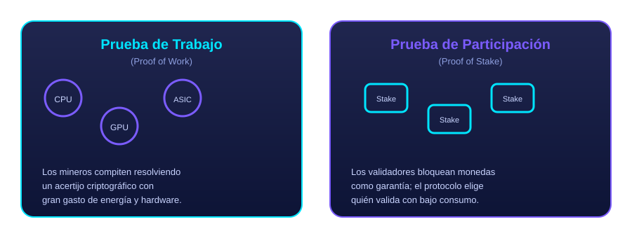
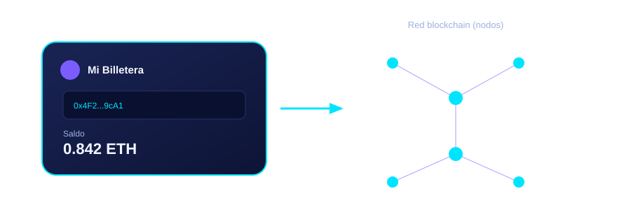

Explicación animada de blockchain
Un video en inglés (con subtítulos disponibles) que resume de forma visual los mismos conceptos explicados en la sección "Acerca de".
Narración: ¿qué es blockchain?
Un resumen hablado en español, generado especialmente para este sitio, con la definición esencial de blockchain.
Infografías del sitio
Todas las ilustraciones de NodoChain son diseños originales en formato vectorial (SVG), creados para este proyecto.





Sitios externos para profundizar
Fuentes confiables y de referencia profesional para seguir aprendiendo sobre blockchain, criptografía y contratos inteligentes.
IBM — ¿Qué es blockchain?
Explicación técnica y empresarial de una de las compañías pioneras en blockchain corporativo.
Ethereum.org
Sitio oficial del proyecto Ethereum, con guías para desarrolladores y principiantes.
Bitcoin.org
Sitio oficial del proyecto Bitcoin, la primera implementación de blockchain pública.
Investopedia — Blockchain
Explicación orientada a finanzas y economía, en inglés.